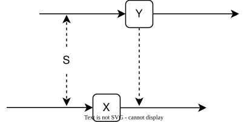
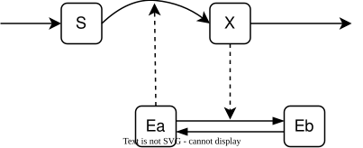
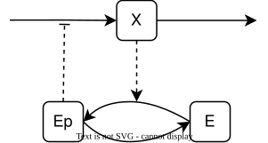
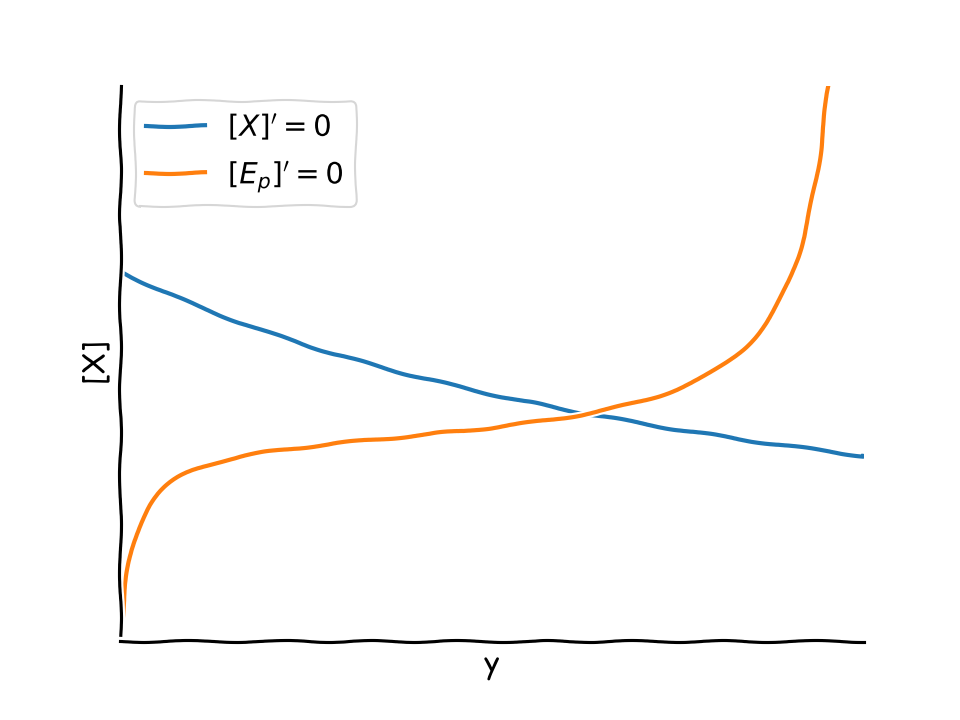
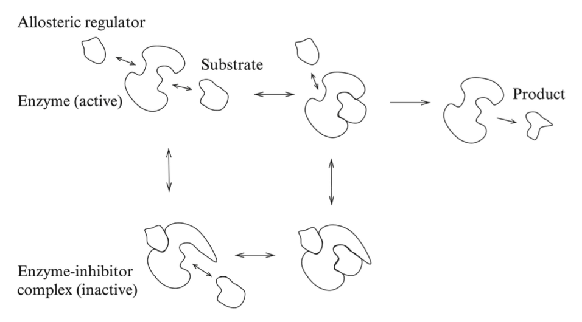

Feedbacks
Assignment 7
Sniffer
There are several physiological systems organized to deliver a constant response, independent of the strength of the signal. Tyson and Novak propose a simple reaction scheme with this property; they call it a “sniffer”, as receptors get adapted to a smell. The scheme is the following

- Write down a system of differential equations describing the scheme.
We have two variables: \([X]\) and \([Y]\). The arrows provide the balance of reaction: \[ \left\{\begin{aligned}{} [X]' &= k_0[S] - k_1[Y][X], \\ [Y]' &= k_2[S] - k_3 [Y].\end{aligned} \right. \]
- Show that the equilibrium value of \([X]\) is independent of \([S]\), and that the equilibrium is globally attractive.
The equilibria follow from the nullclines: \[ \left\{ \begin{aligned} X^* &= \frac{k_0 k_3}{k_1k_2}, \\ Y^* &= \frac{k_2[S]}{k_3}. \end{aligned} \right. \]
We see that \([X]\) only depends on the constants. It is the only equilibrium of the system.
To show that is globally attractive, we have various ways. The simplest is observing that, for a generic initial condition \([X](0)=X_0\) and \([Y](0)=Y_0\), \([Y](t)\to Y^*\) independently of \([X](t)\). Moreover, it converges monotonically from the right (resp. from the left) whenever \(Y_0 > Y^*\) (resp. \(Y_0 < Y^*\)). Assume \(Y_0 > Y^*\). Then \([Y](t) > Y^*\) for all \(t\) and hence \[ [X]'(t) = k_0[S] - k_1[Y][X] < k_0[S] - k_1 Y^* [X] = \frac{k_1 k_2 [S]}{k_3} (X^* - [X]), \]
so also \([X]\to X^*\) monotonically.
Another way is noticing that trajectories are bounded and that there are no limit cycles in \(\mathbb{R}^2_+\) because the divergence is always negative (condition of non-existence of limit cycles.)
A loop
A molecule \(X\) is synthetized from a substrate \(S\) through an enzymatic reaction of Michaelis-Menten kinetics, proportionally to the concentration of the enzyme \(E\) in the active configuration. The enzyme \(E\) moves from bound to active configuration at rate \(k_1\), while the presence of \(X\) helps the opposite transition that occurs at rate \(k_{-1}[X]\).
These reactions can be summarised in the following scheme:

Finally, the substrate is produced at a constant rate, and X dissociates proportionally to its concentration.
- Is there positive or negative feedback on X synthesis?
Negative. \(X\) favors the deactivation of \(E\), which in turn reduces the production of \(X\).
- Write down a system of differential equations corresponding to the assumptions.
We have the following system: \[ \left\{ \begin{aligned}{} [E_a]' &= k_1[E_b] - k_{-1}[X][E_a], \\ [X]' &= -k_2[X] + k_3 \frac{[E_a][S]}{K_m+[S]}, \\ [S]' &= k_0 - k_3 \frac{[E_a][S]}{K_m+[S]}. \end{aligned} \right. \]
Note that \([E_a] + [E_b] = E_\mathrm{tot}\), since the equation for \([E_b]\) is specular to the one for \([E_a]\).
- Compute the (unique) equilibrium of the system, finding conditions for its feasibility. Hint: consider the equation for the sum \([S] + [X]\).
Note that \[ [X]' + [S]' = k_0 - k_2 [X], \]
so at equilibrium we must have: \[ [X] = X^* = \frac{k_0}{k_2}. \]
From \([E_a]'=0\) we obtain the equilibrium value of \([E_a]\), that is \[ E_a^*= \frac{E_\mathrm{tot}}{1 + \frac{k_{-1}k_0}{k_1 k_2}} = \frac{E_\mathrm{tot}}{1 + K_1 X^*}. \]
We can use this value to compute the equilibrium value of \([S]\), denoted by \(S^*\), from the equation \([S]'=0\). We have \[ \frac{S^*}{K_m + S^*} = \frac{k_0}{k_3 E_a^*} = \frac{k_0(1+K_1 X^*)}{k_3 E_\mathrm{tot}}. \]
Note that the equation might have no solutions, because the left hand side has a horizontal asymptote for \([S]\to\infty\). So we end up with the condition: \[ \frac{k_0(1+K_1 X^*)}{k_3 E_\mathrm{tot}} < 1. \]
If the condition is satisfied, then there exists a unique equilibrium.
- Suggest what might be the behavior of the system, when the conditions for the feasibility of the equilibrium are not satisfied.
If there is no equilibrium, then \([S]'\) never cancels, and in particular is always positive: \([S]' > 0\) for all \(t\). Therefore, \([S]\to\infty\) as \(t\to\infty\). This is reasonable: the substrate is consumed too slowly by the reaction, and since the inflow is fixed, it will keep accumulating.
Nonetheless, we can take \([S]\to\infty\) in the equation for \([X]\). In fact we have that \[ \frac{k_3 [E_a] [S]}{K_m + [S]} \to k_3 E_a, \]
as \(t\to\infty\). Therefore, for \(t\) very large, and hence \([S]\) very large, we have the reduced system: \[ \left\{ \begin{aligned}{} [E_a]' &= k_1(E_\mathrm{tot}-[E_a]) - k_{-1}[X][E_a], \\ [X]' &= -k_2[X] + k_3 [E_a]. \end{aligned} \right. \]
Here, there always exists a unique equilibrium. The equilibrium is also asymptotically stable, because the Jacobian (easy to compute) has negative trace and positive determinant.
Inhibition
Consider the following 2-molecule reaction scheme

where the edge with a bar ending means inhibition of the reaction. In particular, we have seen 2 types of inhibition: competitive and allosteric. For competitive inhibition, the half-saturation constant of the Michaelin-Menten law is reduced by a factor \((1 + \ce{I}/K_i)\); for allosteric inhibition, the same factor reduces \(V_\text{max}\). For this exercise, we assume that the rate of the inhibited reaction is of the type: \[ k = \frac{k_1}{k_2 + \ce{[E_p]}}. \]
Note that an increase of \(\ce{[E_p]}\) inhibits the production of \(\ce{[X]}\). More generally, we can have the law: \[ k' = \frac{k_1}{k_2^n + \ce{[E_p]}^n}, \]
for some \(n\ge 1\).
- Does the scheme model a negative or positive feedback loop?
Negative. With no need to write down the equations, we see that an increase of \([X]\) also increases \([E_p]\), which in turn inhibits the production of \([X]\).
- Write down a system of equations representing the scheme.
We have the following equation for \([X]\): \[ [X]' = \frac{k_1}{k_2 + [E_p]} - k_3 [X]. \]
The other equation, say for \([E_p]\), is more standard. We have: \[ [E_p]' = -\frac{V_1 [E_p]}{K_1 + [E_p]} + \frac{V_2 [X] (E_\mathrm{tot}-[E_p])}{K_2 + (E_\mathrm{tot}-[E_p])}, \]
where we exploited the fact that \([E] + [E_p] = E_\mathrm{tot}\).
- Find the equilibria, and study their stability.
From the nullclines, we obtain that the equilibrium is found at the intersection of the curves: \[ \begin{aligned}{} [X']&=0 &\Rightarrow&& [X] &= \frac{k_1}{k_3(k_2 + E_\mathrm{tot}y)} = f(y), \\ [E_p']&=0 &\Rightarrow&& [X] &= \frac{V_1 y(\tilde{K}_2+1-y)}{V_2(1-y)(\tilde{K}_1+y)} = g(y). \end{aligned} \]
where for convenience we set \(y = [E_p]/E_\mathrm{tot}\), \(y\in[0,1]\). Graphically, we see there is a unique intersection.

For the local stability, we check the Jacobian: \[ J([X],y) = \begin{pmatrix} -k_3 & - \frac{E_\mathrm{tot} k_1}{(k_2+E_\mathrm{tot} y)^2} \\ \frac{V_2(1-y)}{\tilde{K}_2 + 1 - y} & - \frac{\tilde{K}_2 V_2 [X]}{(\tilde{K}_2+1-y)^2} - \frac{\tilde{K}_1 V_1}{(\tilde{K}_1+y)^2}\end{pmatrix}. \]
Without the need of substituting the equilibrium, we easily from the analysis of the signs that the trace is negative, whereas the determinant is always positive: \[ J([X],y) = \begin{pmatrix} - & - \\ + & - \end{pmatrix}. \]
The equilibrium is asymptotically stable.
Allosteric inhibition
Allosteric inhibition of an enzyme occurs is a mechanism briefly sketched in the following figure:

When the allosteric regulator binds to the enzyme, a conformation change occurs and it is more difficult for the substrate to bind and/or for the reaction substrate-to-product to occur. In the Figure it is assumed that when the enzyme is bound to the inhibitor (inactive state) the reaction substrate-to-product does not occur at all.
We translate this picture into a reaction scheme as follows:
\[ \begin{aligned} \ce{S + E &<=>[k_{-1}][k_1] SE ->[k_2] P+E} \\ \ce{I + E &<=>[k_{-3}][k_3] IE} \\ \ce{I + SE &<=>[k_{-3}][k_3] IES} \\ \ce{S + IE &<=>[k_{-1}][k_1] IES} \end{aligned} \]
- Write down the equations corresponding to this scheme.
We define \(C_1 = SE\), \(C_2 = IE\), and \(C_3 = IES\). The equations are: \[ \left\{\begin{aligned}{} [S]' &= -k_1[S]([E] + [C_2]) + k_{-1}([C_1] + [C_3]), \\ [E]' &= -k_1[S][E] + (k_{-1}+k_2)[C_1] - k_3[I][E] + k_{-3}[C_2], \\ [I]' &= -k_3[I]([E] + [C_1]) + k_{-3}([C_2] + [C_3]), \\ [C_1]' &= k_1[S][E] - (k_{-1}+k_2)[C_1] - k_3[I][C_1] + k_{-3} [C_3], \\ [C_2]' &= k_3[I][E] - k_{-3}[C_2] - k_1[S][C_2] + k_{-1} [C_3], \\ [C_3]' &= k_3[I][C_1] + k_1[S][C_2] - (k_{-1}+k_{-3})[C_3], \\ [P]' &= k_2[C_1]. \end{aligned}\right. \]
Note that we have the following relationship: \[ [E]' + [C_1]' + [C_2]' + [C_3]' = 0. \]
Since the initial concentration of the complexes is zero, we have: \[ [E] = e_0 - [C_1] - [C_2] - [C_3]. \]
- Assume that each of the reversible reactions in the scheme is at equilibrium (i.e., the rates in both directions are equal) and find the values of \([SE]\), \([IE]\) and \([IES]\) as a function of the concentrations of \([S]\) and \([I]\).
For a generic reversible chemical reaction, \[ \ce{A + B <=>[k_{-1}][k_1] C} \]
the equilibrium is reached for \[ [C]' = k_1[A][B] - k_{-1}[C] = 0, \]
in other words, \[ [A]_\mathrm{eq}[B]_\mathrm{eq} - \frac{k_{-1}}{k_1} [C]_\mathrm{eq} = [A]_\mathrm{eq}[B]_\mathrm{eq} - K_1 [C]_\mathrm{eq} = 0. \]
Since we have 4 reversible reactions, we have the following 4 equations: \[ \left\{\begin{aligned}{} [S][E] - K_1[C_1] = 0, \\ [I][E] - K_3[C_2] = 0, \\ [S][C_2] - K_1[C_3] = 0, \\ [I][C_1] - K_3[C_3] = 0. \end{aligned}\right. \]
If we use \([E] = e_0 - [C_1] - [C_2] - [C_3]\) we have a system of 4 equations in 3 unknowns, namely \([C_1]\), \([C_2]\), and \([C_3]\), given \([S]\) and \([I]\). Specifically: \[ \left\{\begin{aligned}{} [S](e_0 - [C_1] - [C_2] - [C_3]) - K_1[C_1] = 0, \\ [I](e_0 - [C_1] - [C_2] - [C_3]) - K_3[C_2] = 0, \\ [S][C_2] - K_1[C_3] = 0, \\ [I][C_1] - K_3[C_3] = 0. \end{aligned}\right. \]
The system is linear in the unknowns, and rank-deficient (one equation is a linear combination of the others.)
From the first 2 equations we have: \[[C_2][S] = \frac{K_1}{K_3}[C_1][I].\]
In the first equation \[[S]e_0 - [S][C_1] - [S][C_2] - [S][C_3] - K_1[C_1] = 0\]
we replace \([S][C_2]\) as above and \([C_3]\) from the last equation: \[[S]e_0 - [S][C_1] - \frac{K_1}{K_3}[C_1][I] - \frac{1}{K_3}[I][S][C_1] - K_1[C_1] = 0\]
We can solve for \([C_1]\) and find: \[[C_1] = \frac{K_3e_0 [S]}{K_3 [S] + K_1[I] + [I][S] + K_1K_3}.\]
The equations for \([C_2]\) and \([C_3]\) are found in the same manner: \[\begin{aligned}{} [C_2] &= \frac{K_1 e_0 [I]}{K_3 [S] + K_1[I] + [I][S] + K_1K_3}, \\ [C_3] &= \frac{e_0 [I][S]}{K_3 [S] + K_1[I] + [I][S] + K_1K_3}. \end{aligned}\]
Note that this is equivalent to the quasi-steady-state approximation (remember the Michaelis-Menten law, we derived it with 2 different approximations.)
- Find out the rate of product production as a function of \([S]\) and \([I]\) using the relations found at the previous point. Interpret the result as a modified Michaelis-Menten equation.
Since we are interested in the rate of production, we have: \[[P]' = k_2[C_1] = \frac{k_2 K_3 e_0 [S]}{K_3 [S] + K_1[I] + [I][S] + K_1K_3}.\]
Note that this is a function of \([S]\) and \([I]\). We can reformulate it as a Michaelis-Menten law as follows: \[V =\frac{k_2 e_0 K_3}{K_3 + [I]} \frac{[S]}{K_1 + [S]} = \frac{V_\mathrm{max}[S]}{K_1 + [S]}.\]
Therefore, the effect of allosteric inhibition is to modify \(V_\mathrm{max}\).
- Show the steps leading instead to the quasi-equilibrium approximation, assuming that the concentration of enzyme is much lower than that of the substrate and that the concentration of the allosteric inhibitor is constant. Identify the fast and the slow variables in the system. Hint: It is enough to arrive at a system of equations representing the quasi-steady-state approximation without solving these.
We now consider the original system. Since \([I]\) is assumed constant, we consider it as a parameter and remove the corresponding equation.
Together with \([E] = e_0 - [C_1] - [C_2] - [C_3]\) we have the reduced system: \[\left\{\begin{aligned}{} [S]' &= -k_1[S](e_0 - [C_1] - [C_3]) + k_{-1}([C_1] + [C_3]), \\ [C_1]' &= k_1[S](e_0 - [C_1] - [C_2] - [C_3]) - (k_{-1}+k_2)[C_1] - k_3[I][C_1] + k_{-3} [C_3], \\ [C_2]' &= k_3[I](e_0 - [C_1] - [C_2] - [C_3]) - k_{-3}[C_2] - k_1[S][C_2] + k_{-1} [C_3], \\ [C_3]' &= k_3[I][C_1] + k_1[S][C_2] - (k_{-1}+k_{-3})[C_3]. \end{aligned}\right.\]
Now we rescale everything: \[s = \frac{[S]}{s_0},\quad c_1 = \frac{[C_1]}{e_0},\quad c_2 = \frac{[C_2]}{e_0},\quad c_3 = \frac{[C_3]}{e_0},\quad \tau = k_1 e_0 t.\]
We arrive at the system: \[\left\{\begin{aligned} s' &= - s(1-c_1-c_3) + \frac{K_1}{s_0}(c_1 + c_3), \\ \varepsilon c_1' &= s (1 - c_1 - c_2 - c_3) - \frac{k_{-1}+k_2}{k_1 s_0} c_1 - \frac{k_3 [I]}{k_1 s_0} c_1 + \frac{k_{-3}}{k_1 s_0} c_3, \\ \varepsilon c_3' &= \frac{k_3[I]}{k_1 s_0} (1 - c_1 - c_2 - c_3) - \frac{k_{-3}}{k_1 s_0} c_2 - c_2 + \frac{K_1}{s_0} c_3, \\ \varepsilon c_3' &= - \frac{k_3[I]}{k_1 s_0} c_1 + c_2 - \frac{k_{-1}+k_{-3}}{k_1 s_0} c_3. \end{aligned}\right.\]
The system has a fast-slow structure, being \(s\) the slow variable and \(c_1\), \(c_2\), and \(c_3\) being the fast variables.
Formally assuming \(\varepsilon=0\) we arrive at the following system for the complexes: \[\left\{\begin{aligned} s &= \Bigl(\frac{k_{-1}+k_2}{k_1 s_0} + \frac{k_3 [I]}{k_1 s_0} + s\Bigr) c_1 + sc_2 + \Bigl(s - \frac{k_{-3}}{k_1 s_0} \Bigr) c_3, \\ \frac{k_3[I]}{k_1 s_0} &= \Bigl(\frac{k_{-3}}{k_1 s_0} + \frac{k_3[I]}{k_1 s_0} + 1\Bigr) c_2 + \Bigl( \frac{k_3[I]}{k_1 s_0} - \frac{K_1}{s_0}\Bigr) c_3, \\ 0 &= - \frac{k_3[I]}{k_1 s_0} c_1 + c_2 - \frac{k_{-1}+k_{-3}}{k_1 s_0} c_3. \end{aligned}\right.\]
We can simplify it, going back to the original variables:
\[\left\{\begin{aligned} k_1 [S] &= (k_{-1}+k_2 + k_3 [I] + k_1 [S]) c_1 + k_1 [S] c_2 + (k_1 [S] - k_{-3}) c_3, \\ k_3[I] &= (k_{-3} + k_3[I] + k_1 s_0 ) c_2 + (k_3[I] - K_1 k_1) c_3, \\ 0 &= - k_3[I] c_1 + k_1 s_0 c_2 - (k_{-1}+k_{-3}) c_3. \end{aligned}\right.\]
- In the reaction scheme it has been assumed, for the sake of simplicity, that the rates at which the regulator binds and detach are the same, whether the substrate is bound or not to the enzyme, and similarly for the rate at which the substrate binds. How would you change that if it assumed that the inactive conformation of the enzyme makes it more difficult for the substrate to bind to the enzyme?
The inactive conformation of the enzyme is \(IE\). To answer the question, we simply modify the last reaction: \[ \ce{S + IE <=>[k_{-1}][k'_1] IES} \]
with a new rate \(k'_1 \ll k_1\).